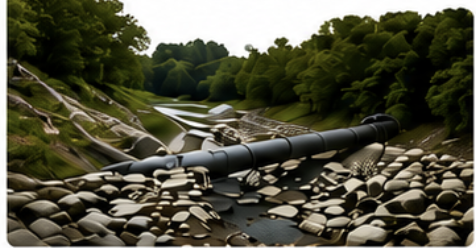
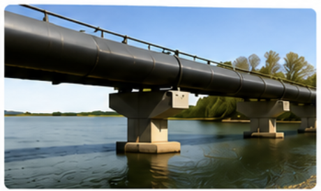
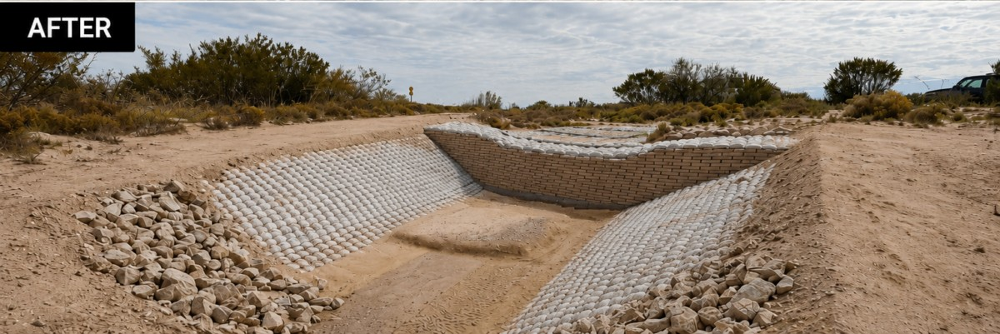

Exposed Crossings
Loss of bed material reducing pipeline cover or support.
Integrated Pipeline Crossing Protection
Different conditions deserve different protection.
An integrated system that combines high-strength Ercoform protection in the channel bed with revegetated Eco-Flex protection along the banks.
Discuss Your SiteDoes this look familiar?
A pipeline crossing may have severe bed degradation near the pipe while the banks face different velocities, slopes and environmental expectations. Treating every surface the same can ignore those differences.

Loss of bed material reducing pipeline cover or support.

Channel degradation and bank erosion occurring within the same project limits.

Hydraulic forces and environmental goals changing across the channel section.
How System 21 works
System 21 integrates two Er-Con mat systems within one site-specific design. Ercoform is used along the bed where strength and full coverage are needed, while Eco-Flex is used on the banks where velocities allow open cells and revegetation.
The result is a coordinated crossing design rather than a compromise that applies one treatment everywhere. Anchoring, transitions and limits are designed to make the two systems function together.
Document pipeline exposure, bed degradation, bank condition, channel geometry and hydraulic forces.
Determine where full-strength protection is required and where revegetated treatment is appropriate.
Configure both mat systems, their transitions and anchoring around the crossing.
Prepare the site, position the panels, fill the mats and complete the surrounding restoration.
Why integration matters
Ercoform provides high-strength coverage in the area most exposed to channel degradation.
Eco-Flex supports vegetation where bank velocities and project objectives allow it.
The site-specific design addresses how different treatments connect and perform together.
The full crossing is considered around the pipeline rather than as separate isolated repairs.
The goal is not an online diagnosis
If a pipeline crossing has both bed degradation and bank erosion, send us field photos, crossing information and any known exposure history. Er-Con will evaluate whether System 21 or another combination of measures fits the site.